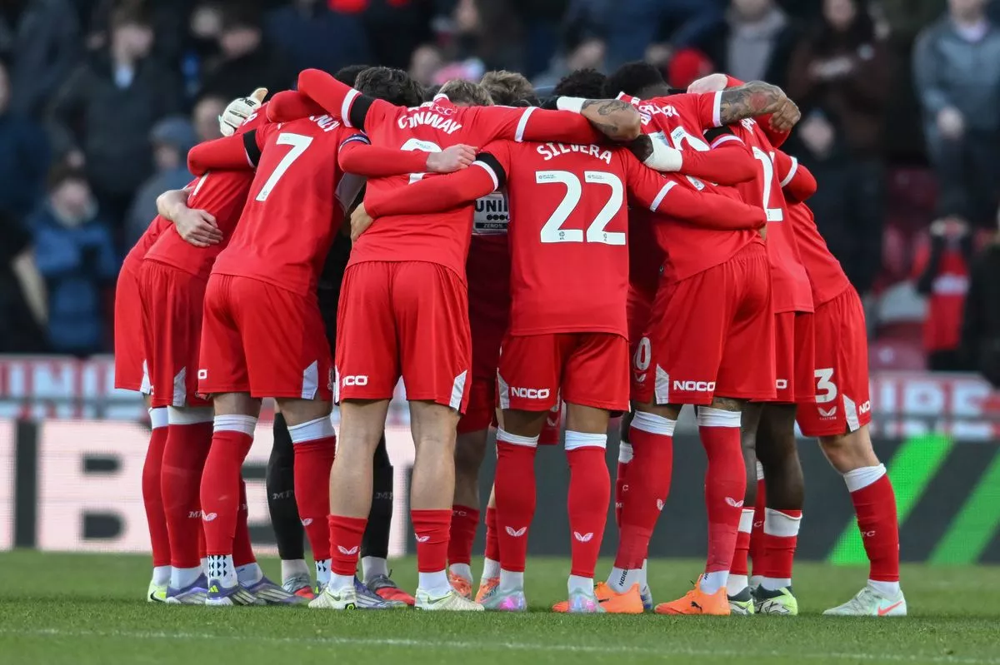

2025/26 Season Review:
By John Craigs - Chief Sports Writer
Welcome to the Boro Predictor 2025/26. Guess the score for every Middlesbrough match in the 2025/26 EFL season before the first game kicks and compete to win post season prizes.
For each EFL fixture involving Middlesbrough this season you can score a maximum of 4 points from your prediction.
Download your predictions and attach to your confirmation email. Good luck!
May 2026
By John Craigs - Chief Sports Writer
